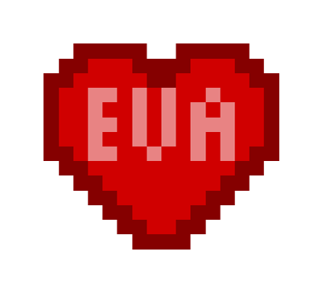

Today, I dropped you off at the airport:( After that I went home and was on my computer for a while. Then I started a show called Halt and Catch Fire which is not bad, but I'll probably be watching that for a few weeks. Then I went to shoppers to get Dr. P, almond milk and some pizzas. There was this guy in front of me who had to be over 8feet tall it was crazy. He was so wide I couldn't see the other cashier waving me over. Then I came home and made pizza and chilled. I'll probably just stay in my room the rest of the night.
Here we are fighting off bandits together.
It's 1:20am and I finally finished the vlog, I hope. Exporting it again cuz the captions weren't displaying.
That's pretty much all for tonight though, I hope I'll be awake to have you text me that you landed, but in regard to future you this is goodnight :*
July 13
Heyy it's Thursday and I still havn't heard from you:/ But I'd like to show you a picture of our second bald son.
I was learning some more coding shit and it was a chapter on JavaScript and it like expected me to know java which was hard but I learned a bit of it so I'm going to try it out below.
eyyy it worked, I hope you're proud, that took longer than I thought. Also imy especially since you havn't texted me by now.
I bet you miss Mia too so here's a picture of her
aliright that's all for today, goodnight ♥
July 14
Hey there. I woke up feeling so shitty. Like I can't stop sneezing and my nose is runny but plugged at the same time. I don't know what I did to deserve this. It's hard to motivate myself, but I'm not really sure what to do, I did watch the whole first season of a show already. My goal for today is to finish the SocialSport 60s video and rate all Gabe's songs so we can choose which song to make a music video of. That's the minimum, but if I'm feeling real productive locked up in my room I want to finish all the interviews we've shot so far as well and learn some more code because I think I could get through Java by the end of the summer. On top of that I want to try to design a video or audio player. So if that's not below on this day that means I've failed.
Okay, well I did that and it was pretty easy. To fully customize it I'd need to code in a language called JQuery which I don't know ass about, so maybe I'll come back later and make it neater.
I've just been working on this all day, but I finally found a system that works so that you can see it even on your phone. Jerry's back now. He asked me to pick him up from the airport but I told him I'm too sick. Which I am, but I mean he can afford to take the bus once. We are gonna play some games tonight when he gets back which I'm excited for. You're probably at the movie now so hopefully I've fixed this by the time you're back. I'll keep updating it too so you can always go back to this URL to see if I've updated. PS I finished most of the HTML learning so CSS is next which means I'll learn how to actually style it better and make it look all pretty for you.
Hello. It's saturday and I woke up at 1pm which was pretty nice. I mean at least I don't feel tired on top of everything else. I'm going to go to safeway to get groceries and new cat litter so certain PEOPLE will stop bitching.
Well I went to safeway to get cat litter and food and stuff and ended up spending 70$, so I hope she's happy. Also I made a sausage and egg burrito and it was amazing. I took some niquil and am now just chilling. I canceled on Arash and of course he was like oh you're a pussy, but whatever fuck him.
I just finished playing a nice game night, won a few times. But I went down stairs and ran into very drunk Austin with his tindr date lol. Sorry I don't have much for today, I'll put more effort in once I'm feeling better.
July 16
Okay, I just finished this slideshow thing. It took a lot of work and I'm not sure it works well on mobile, but I'm happy with it. I hope you're having fun shopping.
Good morning. Yet another day of waking up and staying in my sweatpants, doing whatever on my computer until 12pm magically turns into 7pm. If I feel better tomorrow I'll go skate and try to get back into normal live mode. Abu gets back soon anyways so I'll have to start going down there to interview which will be nice. I am starting to enjoy it thought. I mean I started play Pit People again, I have a good show to watch, I'm working on Chosen Khan stuff and logo designs (well I will try one today) and even learned how to play minesweeper. My book came in the mail so I've actually been read, ikr so smart. It's Player Piano by Kurt Vonnegut, the one Grayson recommended.
So I know you havn't been gone very long, but you are gone. You're in a different place and I can't get to you. I know you're coming back and this won't be regular, I know all that but I can't help feeling like this is a glimpse of what a long distance relationship between us would be like. From what it's been like so far, I wouldn't want that and I don't think I could do that. Now it's not anything you've done. I'm sure we would find a schedule that works for us and I'd get used to it and all that comes along with settling into a long distance relationship. However in this short long distance thing it sucks, a lot. Most of that is coming from me and I'll get to that. I know you can feel too how it seems like we have nothing to say and we don't really want to talk to each other and it's almost like what's the point of talking if it's gonna be shallow and not even close to like it is when we're physically together. Even when we are apart but still in the same city it's different and I know you can see that too. When you're in Langely for a night we have a better conversation than we've had all of your trip. So I guess this little real talk is an apology. What am I sorry for? Well I'm pretty sure I'm holding a subconscious grudge against you. Not for going on a beautiful vacation without me (I mean yeah of course I'm jealous but that's not a reason to hold a grudge). It's just I've been through 10 months of this and it's awful. I'm not comparing you to her, it's just this situation sends me back to how I felt then and everytime I do see your face or hear from you I realize that I'm with you and you're perfect for me in ways that I could never imagine when I was in that situation. It's only the similarities that put me in this mood when I feel like we can't talk and the thought of trying to make this feel normal just feels painful to me. The few times you've said "What do you want to talk about" sends a shock of PTSD. I've been trying to forget and see past it, to look right in front of me and actually pay attention to the beautiful, amazing girl I get to talk to and who uses every second she has wifi to talk to me. Yeah long distance or just being apart and only have messaging and video chat to communicate is tough and gets boring and causes miscommunication, but it could be a whole lot easier if I wouldn't revert back to the state I was during those 10 months. So I'm sorry I'm making this hard, I hope that it hasn't had an effect on you, but I do love you very much and I should appreciate you a trillion times more than I do. I appreciate your eggxistence Eva even when you're eggxisting so far away from me. This was nice to get off my chest and I hope it helps you understand a bit too.
So every other day or so I've been recording the numbers for all the Chosen Khan social media stats like subscribers and stuff, I'll embed the sheet below. But lately it's been getting pretty slow. As you can see the numbers literallly go up by 2 or 200 hundred each day depending on views or subs or whatever. Which is like a subscriber a day or 100 views a day. I guess that actually is pretty good, a nice steady growth. But it kind of has me discouraged about the whole thing. Like is what I'm doing even worth it or like is it making an impact. Or why isn't it growing more? I mean maybe it has something to do with Abu being gone. I've also started to think about how to end it all if Abu decides to do something else. Or to think about stressing over getting work done each week that just shows no result. So idk I mean I'll just keep grinding because that's how things like this tend to flourish. I've kinda decided to just put it on the backburner, kind of just treat it like a sidejob to maintain every week and focus more on other things like the music video or the wedding. It's just kind of dissapointing putting so much work into a project that not even the host seems to care about much. Anyways, below are the numbers so far and I'll be updating it twice befoer you get back so you can check again if you want to see if it's gone anywhere after posting the interview I'm working on now.
July 18
I'm sorry about today, I'll have something more interesting tomorrow.
 I love you very much, Eva
July 19
Hey there, beautiful thing. Not a lot going on today. I woke up nice and late which was pretty amazing. I didn't have anything to make for breakfast so I made some taquitos and a smoothie out what fruit I had left. Tim still hasn't given my camera back so he told me where he spare key was and I'll go pick that up today along with some corn beef hash probably. I did try some designing though. I made a business card for a group of people called Shriners. I guess it's like a middle eastern fraternity type thing, kinda like masonry. I'm not sure, but apparently no designs have been submitted yet and there's only a day left so I might get it. I did find a cool way to display the artwork thought, I'll show you below. Other than that I'll just chill today, Jerry's going out to dinner so he didn't want to make dinner with me:(. Anyways, I miss you a bunch.
July 20
Well since you're too cool to talk to me irl, I'll keep telling you about stuff on here. You pretty much already know what I did today, but I've been missing you more. Not in a "I can't function without you and I'm dependant on you" but a more "You're my shinning sun and make life the best it's ever been and no matter how strong anyone is, humans can't see in the dark" sort of way. But only one day so I'll make it. So seeing Abu was really nice, good to start working on things again. He is probably going to get a job in Victoria with the NDP for 5 days a week so idk how we'll continue this. Also it turns out most of the trip was to go meet that girl he's been talking to. The story is that her parents want her to marry this guy who's family is close with theirs. So it's super dramatic and Abu is just trying to convince her and her parents that he's the one for her. Also Hamza showed up wearing some weird clothes as usual, but as soon as he came in he pulled out this little camera and started just recording us while he talked. Then he put it up in the air and starting doing the whole vlogger talk with the "links in description" thing. Then he just put it down like nothing, but then he would just turn it on randomly and it would beep and he'd just point it at us while we were just chilling. It was weird. He did make me say "What's up my chummies" to the camera so that's on the internet somewhere. But now I'm back, uploading the video. I realized the only thing I've eaten today was that breakfast burrito at 10am so my stomach was stinging. It kinda gone away, but I should make some food. It is game night upstairs so I'll go do that as well. But anyways, I hope you're having fun and don't think I'm too desperate or anything just cuz I miss you and all. But I love you and I'll see you hella soon.
July 21
Alright, for the last day I don't have much to say since pretty much all I'm doing is going to Jerry's and then I get to see you in the morning. However, I did dabble in some Javascript and made this little game. You can't play it on your phone so you'll have to wait until you have a laptop. But, I want to use it as a foundation for trying more code so it'll just keep getting better. You can see a sneak peak of it tho, I love you see you tomorrow:)